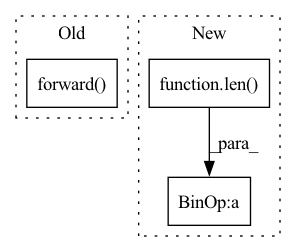

Pattern ID :11361
Before Change
def training_step(self, batch, batch_index):
(view_global, view_local, grid_global, grid_local), _, _ = batch
z_global, z_global_local_features = self.forward( view_global)
z_local, z_local_local_features = self.forward(view_local)
loss = self.criterion(
z_global=z_global,
z_local=z_local,After Change
def training_step(self, batch, batch_index):
views_and_grids = batch[0]
views = views_and_grids[: len( views_and_grids) // 2]
grids = views_and_grids[len(views_and_grids) // 2 :]
features = [self.forward(view) for view in views]
loss = self.criterion(In pattern: SUPERPATTERN
Frequency: 3
Non-data size: 3
Instances Fragment ID: 38805093
Project Name: lightly-ai/lightly
Commit Name: d9289cdee9de1d8fb56b07719ea6485b966079d3
Time: 2023-04-03
Author: 43336610+guarin@users.noreply.github.com
File Name: examples/pytorch_lightning/vicregl.py
M Class Name: VICRegL
N Class Name: VICRegL
M Method Name: training_step(3)
N Method Name: training_step(3)
M Parent Class: pl.LightningModule
N Parent Class: pl.LightningModule
M File Name: examples/pytorch_lightning/vicregl.py
N File Name: examples/pytorch_lightning/vicregl.py
M Start Line: 39
M End Line: 49
N Start Line: 39
N End Line: 48
Before Change
def training_step(self, batch, batch_index):
(view_global, view_local, grid_global, grid_local), _, _ = batch
z_global, z_global_local_features = self.forward( view_global)
z_local, z_local_local_features = self.forward(view_local)
loss = self.criterion(
z_global=z_global,
z_local=z_local,After Change
def training_step(self, batch, batch_index):
views_and_grids = batch[0]
views = views_and_grids[: len(views_and_grids) // 2]
grids = views_and_grids[len( views_and_grids) // 2 :]
features = [self.forward(view) for view in views]
loss = self.criterion(
global_view_features=features[:2], Fragment ID: 38805095
Project Name: lightly-ai/lightly
Commit Name: d9289cdee9de1d8fb56b07719ea6485b966079d3
Time: 2023-04-03
Author: 43336610+guarin@users.noreply.github.com
File Name: examples/pytorch_lightning_distributed/vicregl.py
M Class Name: VICRegL
N Class Name: VICRegL
M Method Name: training_step(3)
N Method Name: training_step(3)
M Parent Class: pl.LightningModule
N Parent Class: pl.LightningModule
M File Name: examples/pytorch_lightning_distributed/vicregl.py
N File Name: examples/pytorch_lightning_distributed/vicregl.py
M Start Line: 39
M End Line: 49
N Start Line: 39
N End Line: 48
Before Change
def forward(self):
// fmt:off
return torch.sum([mod.forward() for mod in self.modulated_modules], dim=0) / \
torch.sum([mod.modulation for mod in self.modulated_modules], dim=0)
// fmt:on
After Change
average, weight = None, 0
for mod in self.modulated_modules:
try:
weight += mod.modulation[mod.index % len( mod.modulation) ]
if average is None:
average = mod.forward().squeeze()
else: Fragment ID: 38805098
Project Name: maua-maua-maua/maua
Commit Name: 6783d3cf23d04c9690a519d8d0de3f450241328f
Time: 2022-01-27
Author: hans@brouwer.work
File Name: maua/audiovisual/patches/primitives/merge.py
M Class Name: ModulationSum
N Class Name: ModulationSum
M Method Name: forward(1)
N Method Name: forward(1)
M Parent Class: torch.nn.Module
N Parent Class: torch.nn.Module
M File Name: maua/audiovisual/patches/primitives/merge.py
N File Name: maua/audiovisual/patches/primitives/merge.py
M Start Line: 11
M End Line: 12
N Start Line: 10
N End Line: 23